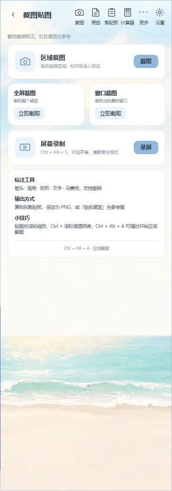
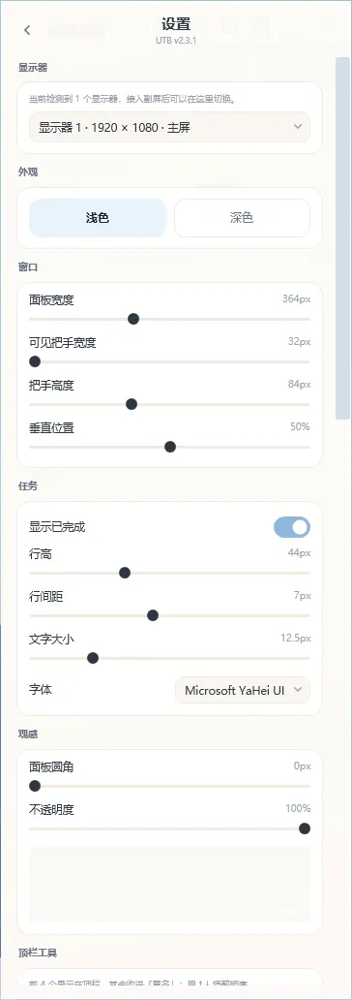
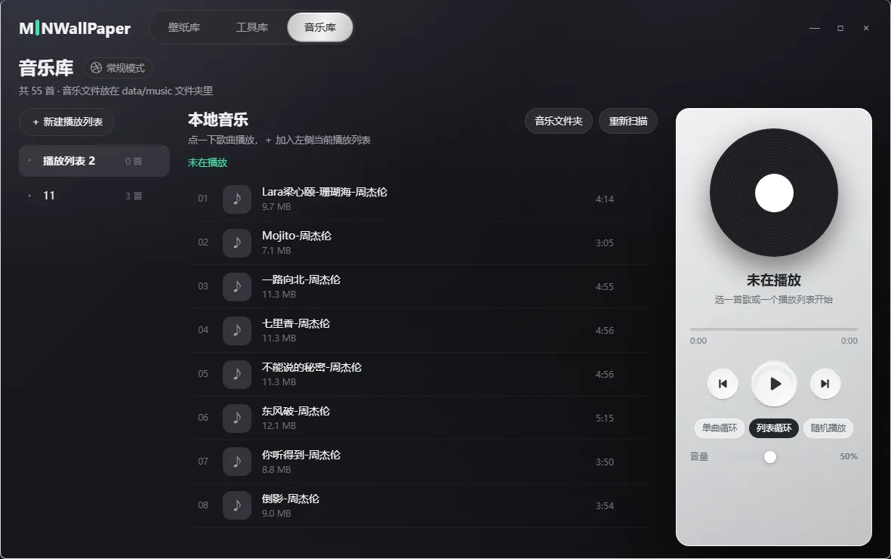
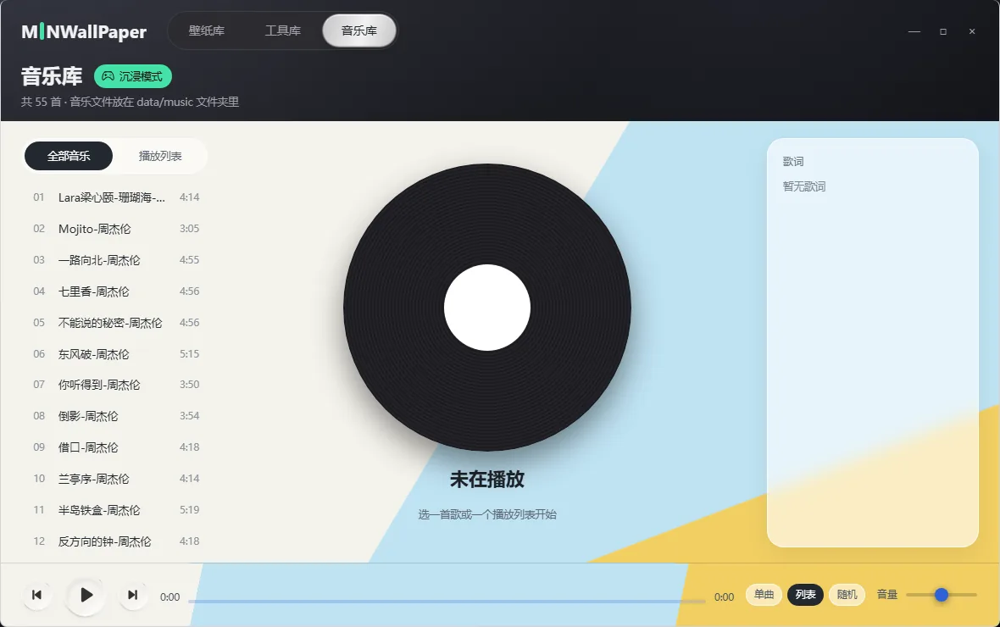
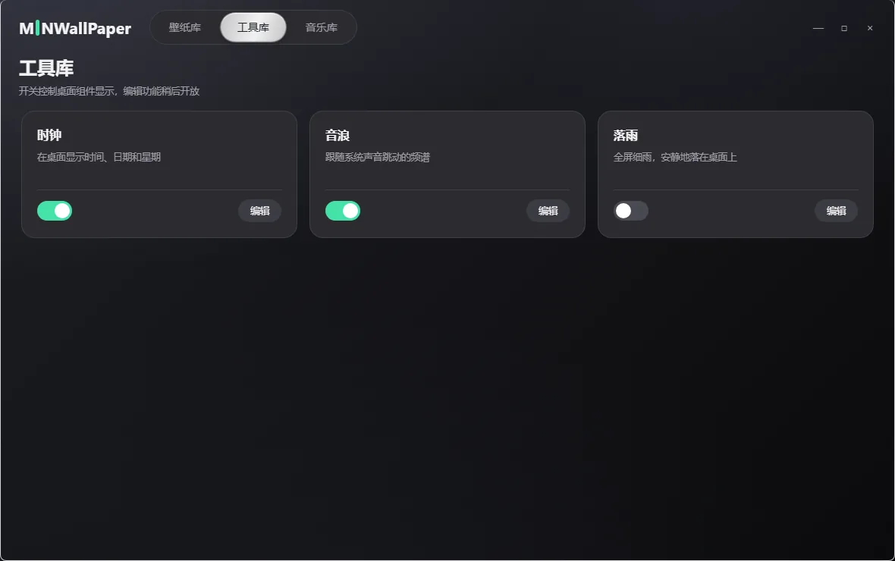
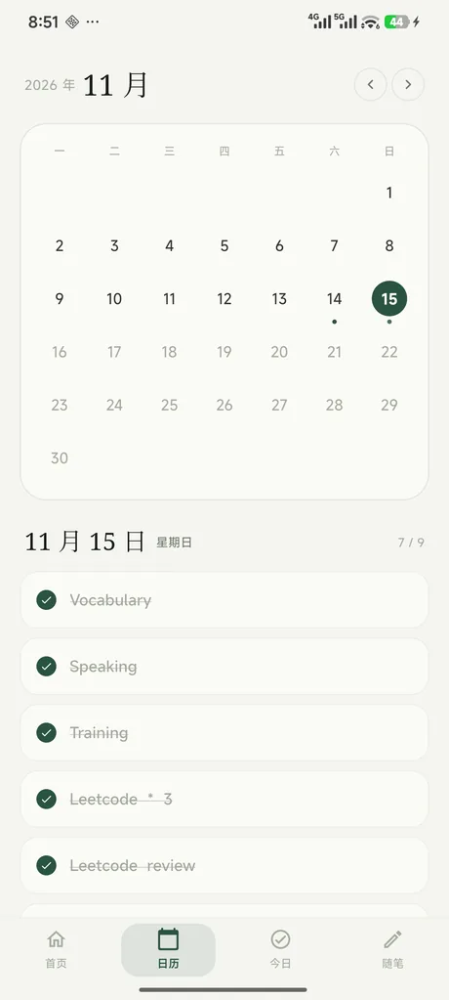
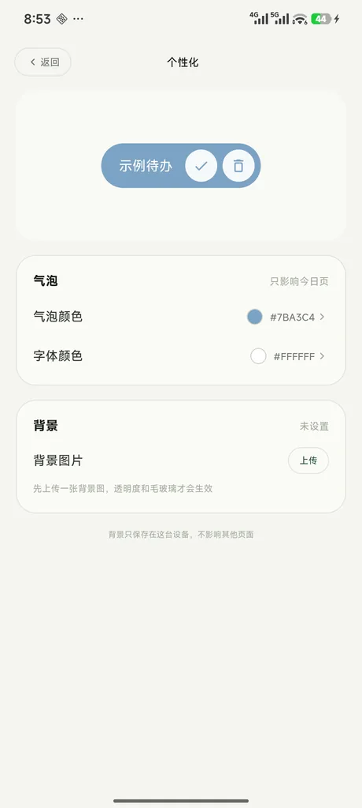
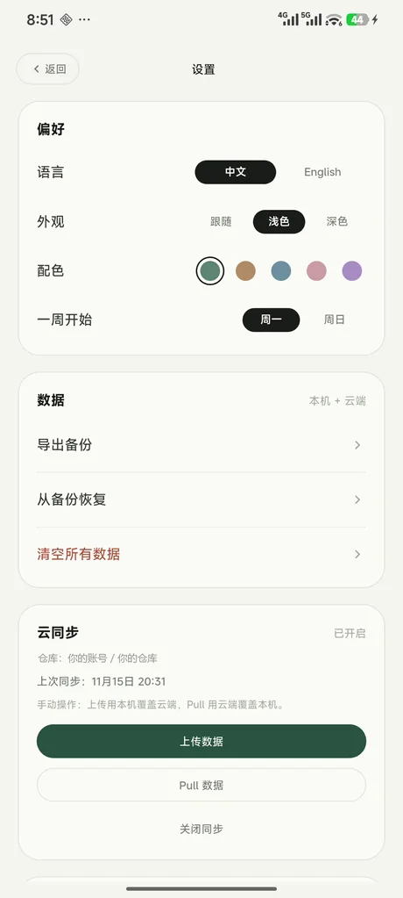

便签与待办
悬浮便签、日/周/月待办、纪念日提醒。字号跟着便签大小走，写多了也不会挤。
➜~/codecat — whoami
把复杂的事做简单，把简单的事做久。 写不完的代码，睡不够的觉。
›
CodeCat，一只大四喵，不能打死喵。
平时写 Java、Python，也折腾了一些 Agent 和 RAG 相关的技术，偶尔做点小游戏 demo。
后端主要写 Java（Spring Boot），CRUD 基本也就是 Java 写得最多的地方，对于 LLM、ML 之类的还是用的 Python。
Python 那边做 Agent 和 RAG：文档切分、向量召回、结果重排，从搭到调都是我自己的。中间踩的坑比写 Java 多，可能是因为自学的缘故。现在好多了，召回不准的时候，知道回头看 Chunk，遇到问题也能判断问题在哪——模型问题、代码约束问题、Prompt 工程问题、脏数据问题 etc.
每个项目都写了为什么做、怎么做、做到哪一步。
把零散的诈骗线索丢进去，吐出带证据链的研判结论。每条结论都能回溯到原始证据。
多 Agent 分工的教学助手：规划、讲解、出题各管一段。
抖音小游戏。背包、寻路、战斗全套自己搭，猫在大房子里自己过日子。
工厂设备的实时看板。
自己写的小东西，做好一个放一个。点开直接能用，不用装。
便签、待办、截图标注、剪贴板、录屏……一个侧边栏全收好。用时滑出，不用时让开，不打断手头的事。
不用在十几个窗口之间找工具。贴边，滑出，做完，收回去。
悬浮便签、日/周/月待办、纪念日提醒。字号跟着便签大小走，写多了也不会挤。
箭头、画笔、矩形、文字、马赛克、橡皮，支持选择移动、撤销重做、缩放平移，截完直接贴到桌面。
最近 60 条文字和图片，图片只留缩略图不占内存。右键改文字、贴图、编辑后贴。
Ctrl+Alt+S，单击录全屏或拖拽选区。MP4 带系统声音和麦克风，也能录 GIF；工具条不会入镜。
明暗两套配色，6 张插画壁纸。面板宽度、圆角、透明度、把手位置都能调，改完立刻生效。
数据默认存在本机，可以迁移到别的盘。便签、截图、录屏不上传；只有你主动配置 Gitee 才会同步。

区域、全屏、窗口三种截法。进编辑器后可以像在画板上一样改，保存 PNG 或钉在桌面当参考。

贴左边还是右边、把手多高、面板多宽、背景多透，都可以在设置里拖着调，改完马上看到效果。
从待办切到剪贴板，再进截图页和设置页，就是日常使用的样子。视频是 UTB 自己录的，只截了面板区域。
Windows 10 2004 及以上 / Windows 11，64 位。安装包自带 .NET 8 运行时，双击安装，默认装到 D:\Programs\UToolBar。默认从 Gitee 国内镜像下载，GitHub 版本在「全部版本」里。
默认走 Gitee 国内镜像，实测能到 2MB/s 左右，46MB 大约二十多秒。如果镜像不可用，可以点「全部版本」去 GitHub 下载。
不需要。安装包是自包含的单文件发布，已经带上了 .NET 8 运行时。
部分 Intel 显卡驱动在非 16 对齐的选区宽度下会崩溃，为了任意选区都能稳定录制，这里用了系统软件编码。1080p 录制大约占用 0.4 个 CPU 核心。
默认在 %APPDATA%\UToolBar，截图和录屏分别在图片、视频目录下。所有内容都只留在本机，不会上传；只有你主动配置 Gitee 仓库时才会同步 data.json。
不会。2.3 起首次启动会自动把 %APPDATA%\EdgeBar 的数据复制到 %APPDATA%\UToolBar，并迁移开机自启，旧目录保留作备份。
把动态壁纸、唱片机音乐库和桌面小工具收进一个轻量面板。视频硬解铺满桌面，每张壁纸可以配一首歌；壁纸、音乐、播放列表都留在本机。
壁纸、音乐、工具都在同一个面板里。不联网，不登录，打开就能用。
Media Foundation 硬解铺满桌面，支持 mp4 / mkv / mov / avi / wmv。播放卡住会自动重启，视频本身强制静音。
每张壁纸可以绑定一个播放列表或单曲；切到这张壁纸，音乐自动切过去，列表循环或单曲循环都行。
黑胶唱片、专辑封面、同名 .lrc 歌词、单曲 / 列表 / 随机三种循环。一键切到浅色沉浸页，唱片会转。
时钟、跟随系统声音跳动的音浪，还有刚加的落雨。全屏雨丝鼠标可以穿透，不挡桌面图标，也不抢焦点。
WinForms 只负责系统能力，界面交给 WebView2 渲染。胶囊导航、白色玻璃播放器、唱片封面，窗口缩放不会塌。
壁纸、音乐、播放列表、封面缓存都在程序目录的 data 文件夹。不上传，不联网，换电脑拷贝 data 就能带走。

壁纸详情里多了一栏「音乐」：可以选一个播放列表，也可以搜一首单曲。选中播放列表就列表循环，选中单曲就单曲循环。

点「音乐库」旁边的开关，一道斜线把当前页面切开，两片页面向左右推开，露出浅蓝和芥末黄的沉浸页。

工具库里的开关即开即用：时钟显示时间和日期，音浪跟着系统声音跳，落雨是整屏细雨。
Windows 10/11 64 位。安装包 3.1MB，双击安装，装到当前用户目录，不需要管理员权限；需要 .NET 8 Desktop Runtime，视频壁纸需要 WebView2（Win11 自带）。包内不含任何个人壁纸、音乐或播放列表数据，卸载时也会保留 data 文件夹。源码在 GitHub 和 Gitee，下载走站内直链或 Releases。
需要 .NET 8 Desktop Runtime；安装包没有自带运行时，所以只有 3.1MB。Win11 一般已有 WebView2，Win10 如果没有，第一次打开面板时按提示安装即可。
视频壁纸默认强制静音，声音交给音乐库。每张壁纸可以绑定一个播放列表或单曲，切换壁纸时自动切歌。
mp4、mkv、mov、avi、wmv 等 Media Foundation 能解码的格式；HEVC 需要系统安装 HEVC 视频扩展。壁纸卡片预览由后端抽帧生成，不依赖浏览器解码。
都在程序目录的 data 文件夹：data/wallpapers、data/music/files，播放列表和壁纸绑定也在 data 下。不上传、不联网，换电脑直接拷贝整个 data 文件夹。
打开工具库，点对应卡片的开关即可。落雨是全屏透明雨丝，鼠标可以穿透，不挡桌面图标。
程序本身是框架依赖发布，没有把 .NET 运行时打进去。壁纸、音乐、封面和播放列表都由你本地的 data 文件夹提供，安装包里不包含这些内容。
没有「项目」「合集」「看板」这些要先学会的概念。打开，勾掉，关掉。
今天做完几件，环就走多少。剩下几件会单独写一行，不用自己算。
每一格都是正方形，颜色越深做得越多。平板横过来也不会拉成细长条。
一次性的待办只出现在创建那天；每天、每周、自定义按你的节律来。
图片、短视频、录音、标签、收藏，写一半退出会自动存草稿。
气泡颜色、字体颜色、背景图和毛玻璃，只作用于今日计划这一页。
设置里一键切换，日期、星期、问候语都跟着变，你写的内容不动。

月历上能直接看出哪天做了什么。点开某一天，当天的清单会从下面滑出来，可以补看，也可以补勾。

右上角的「个性化」里能改气泡颜色、字体颜色，也能上传一张自己的背景图，调透明度和毛玻璃。默认是奶油蓝配白字。

待办、随笔、打卡记录都存在手机里的一个 data.json。可以导出备份，也可以同步到自己的 Gitee 私有仓库，没有第三方服务器。
安卓手机安装包，Android 7.0 及以上，55.5 MB。默认从 Gitee 下载，GitHub 版本在「全部版本」里。
这是安卓手机的安装包（.apk），电脑上双击是打不开的。把文件传到手机上安装，或者直接用手机浏览器打开这个页面下载。
不需要。没有账号，也没有登录，数据默认只存在本机。想要多设备同步，可以自己开一个 Gitee 私有仓库，在设置里填令牌和仓库名。
两种方式：设置 → 数据 → 导出备份，把文件传到新手机后「从备份恢复」；或者在旧手机点「上传数据」，新手机配好同一个仓库后点「Pull 数据」。
暂时不能，目前只有安卓版。iPhone 无法安装 .apk 文件，这一点系统层面就限制了。
详细点击文章进入我的博客小站
// keyboard
MINITODO v1.0 · 55.5 MB · ANDROID 7.0+
这是安卓手机的安装包，装到电脑上不能用。想装到手机？把文件传到手机，或者直接用手机打开这个页面。